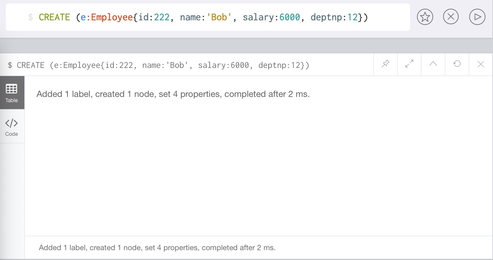
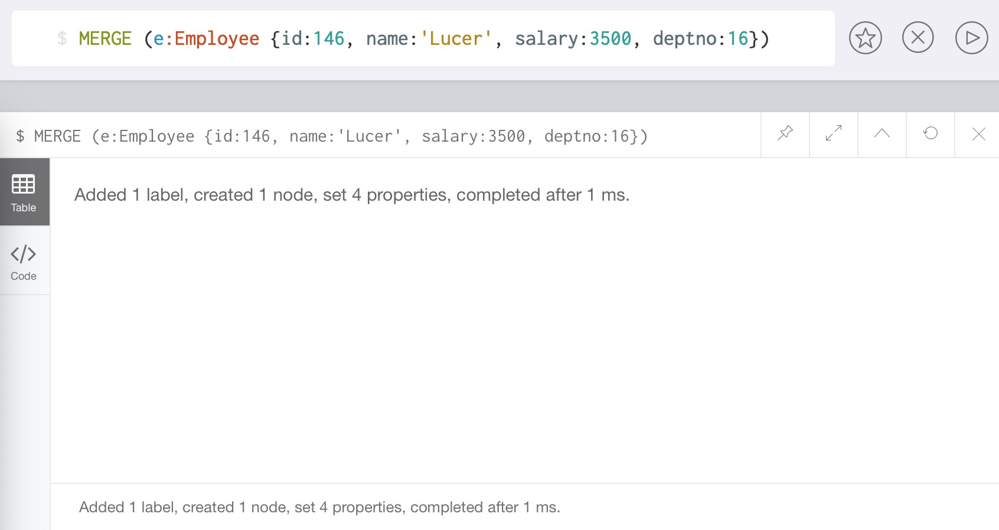
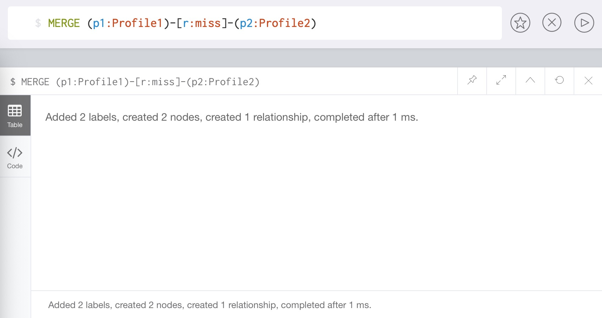
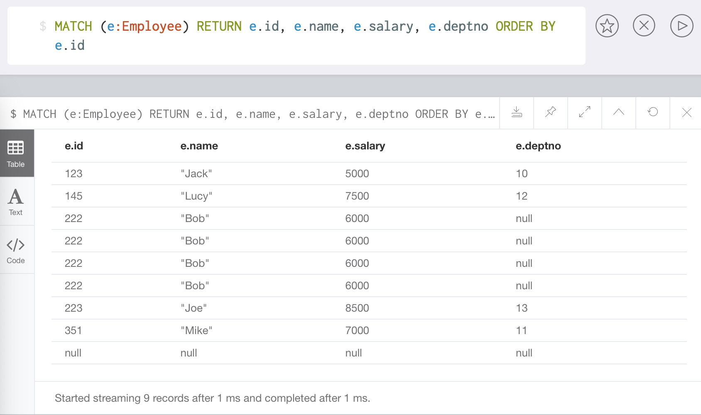
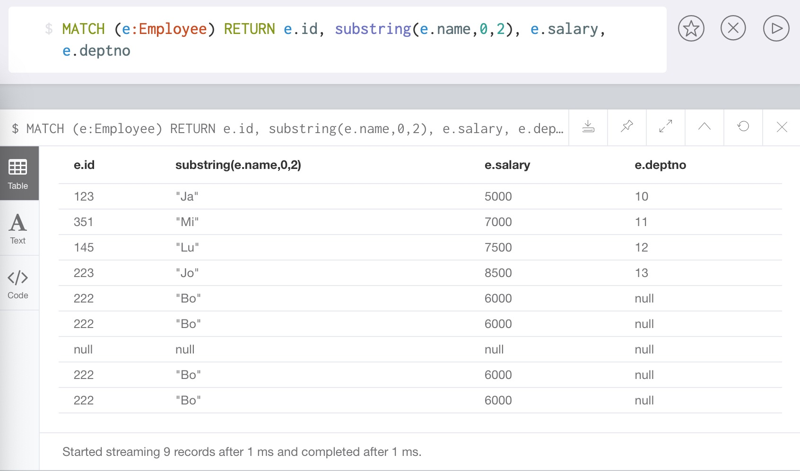
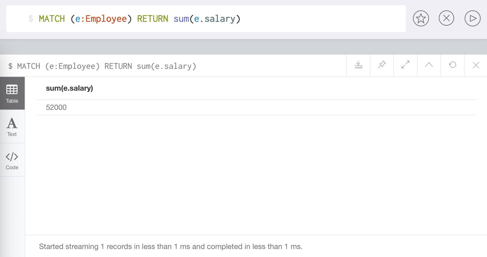
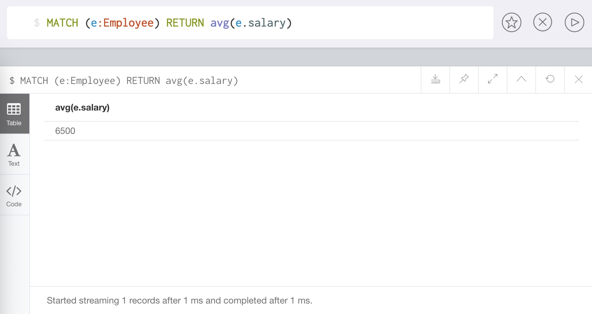
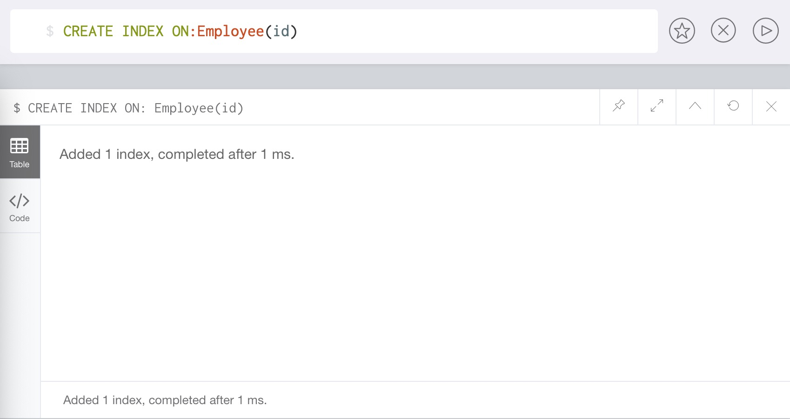
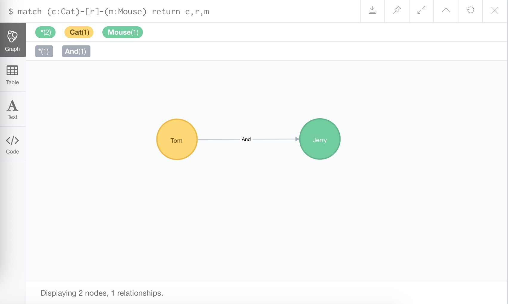

第三章:neo4j图数据库
3.1 neo4j介绍¶
学习目标
- 了解neo4j图数据库的简介，版本说明。
- 了解节点，关系，属性，标签的有关概念。

1 neo4j简介¶
- neo4j是由Java实现的开源NoSQL图数据库。自从2003年开始研发，到2007年发布第一版。neo4j现如今已经被各行各业的数十万家公司和组织采用。
-
neo4j实现了专业数据库级别的图数据模型的存储。与普通的图处理或内存级数据库不同，neo4j提供了完整的数据库特性，包括ACID事物的支持，集群支持，备份与故障转移等。这使其适合于企业级生产环境下的各种应用。
-
neo4j的版本说明：
- 企业版：需要高额的付费获得授权，提供高可用，热备份等性能。
- 社区开源版：免费使用，但只能单点运行。
2 neo4j图数据库概念¶

-
节点
- 节点是主要的数据元素，节点通过关系连接到其他节点，节点可以具有一个或多个属性 (即存储为键/值对的属性), 节点有一个或多个标签，用于描述其在图表中的作用。示例：Person>节点。
- 可以将节点类比为关系型数据库中的表，对应的标签可以类比为不同的表名，属性就是表中的列。
-
关系
- 关系连接两个节点，关系是方向性的，关系可以有一个或多个属性(即存储为键/值对的 属性).
-
属性
- 属性是命名值，其中名称(或键)是字符串，属性可以被索引和约束，可以从多个属性创 建复合索引。
-
标签
- 标签用于组节点到集，节点可以具有多个标签，对标签进行索引以加速在图中查找节点。
3.2 neo4j图数据库的安装¶
学习目标 * 掌握neo4j图数据库的安装流程及其可视化后台的登陆
1 neo4j图数据库的安装流程¶
-
第一步：将neo4j安装信息载入到yum检索列表。
-
第二步：使用yum install命令安装。
-
第三步：修改配置文件内容 /etc/neo4j/neo4j.conf.
-
第四步：启动neo4j数据库。
第一步：将neo4j安装信息载入到yum检索列表
rpm --import http://debian.neo4j.org/neotechnology.gpg.key
vim /etc/yum.repos.d/neo4j.repo
# 写入下面内容
[neo4j]
name=Neo4j RPM Repository
baseurl=http://yum.neo4j.org/stable
enabled=1
gpgcheck=1
第二步：使用yum install命令安装
yum install neo4j
第三步：修改配置文件默认在/etc/neo4j/neo4j.conf, 为了方便显示下面把一些修改显示在这里
# 数据库的存储库存储位置、日志位置等
dbms.directories.data=/var/lib/neo4j/data
dbms.directories.plugins=/var/lib/neo4j/plugins
dbms.directories.certificates=/var/lib/neo4j/certificates
dbms.directories.logs=/var/log/neo4j
dbms.directories.lib=/usr/share/neo4j/lib
dbms.directories.run=/var/run/neo4j
# 导入的位置
dbms.directories.import=/var/lib/neo4j/import
# 初始化内存大小
dbms.memory.heap.initial_size=512m # 将这一行注释去掉
# web页面地址
dbms.connectors.default_listen_address=0.0.0.0
# HTTP Connector. There can be zero or one HTTP connectors.
dbms.connector.http.enabled=true
dbms.connector.http.listen_address=:7474 # 将这一行注释去掉
# HTTPS Connector. There can be zero or one HTTPS connectors.
dbms.connector.https.enabled=true
dbms.connector.https.listen_address=:7473 # 将这一行注释去掉
# Bolt 连接地址
dbms.connector.bolt.enabled=true
# dbms.connector.bolt.tls_level=OPTIONAL
dbms.connector.bolt.listen_address=:7687 # 将这一行注释去掉
第四步：启动neo4j数据库
# 启动命令
neo4j start
# 终端显示如下，代表启动成功
Active database: graph.db
Directories in use:
home: /var/lib/neo4j
config: /etc/neo4j
logs: /var/log/neo4j
plugins: /var/lib/neo4j/plugins
import: /var/lib/neo4j/import
data: /var/lib/neo4j/data
certificates: /var/lib/neo4j/certificates
run: /var/run/neo4j
Starting Neo4j.
WARNING: Max 1024 open files allowed, minimum of 40000 recommended. See the Neo4j manual.
Started neo4j (pid 2463). It is available at http://localhost:7474/
There may be a short delay until the server is ready.
See /var/log/neo4j/neo4j.log for current status.
2 neo4j的可视化管理后台登陆¶
- 访问地址：http://192.168.88.161:7474
- ConnectURL: bolt://192.168.88.161:7687
- Username: neo4j
- Password: neo4j (第一次登录)，虚拟机中已改成123456
3 小节总结¶
-
学习了neo4j图数据库的安装流程：
- 第一步：将neo4j安装信息载入到yum检索列表。
- 第二步：使用yum install命令安装。
- 第三步：修改配置文件内容 /etc/neo4j/neo4j.conf.
- 第四步：启动neo4j数据库。
-
学习了neo4j的可视化管理后台登陆：
- 访问地址：http://192.168.88.161:7474.
- ConnectURL: bolt://192.168.88.161:7687
- Username: neo4j
- Password: neo4j (默认)
3.3 Cypher介绍与使用¶
-
学习目标
- 了解Cypher的基本概念。
- 掌握Cypher的基本命令和语法。
-
Cypher的基本概念：
- Cypher是neo4j图数据的查询语言，类似于mysql数据库的sql语句，但是它允许对图形进行富有表现力和有效的查询和更新。
-
Cypher的基本命令和语法：
- create命令
- match命令
- merge命令
- relationship关系命令
- where命令
- delete命令
- sort命令
- 字符串函数
- 聚合函数
- index索引命令
1 create命令¶
创建图数据中的节点
- 演示：
# 创建命令格式：
# 此处create是关键字，创建节点名称node_name, 节点标签Node_Label, 放在小括号里面()
# 后面把所有属于节点标签的属性放在大括号'{}'里面，依次写出属性名称：属性值，不同属性用逗号','分隔
# 例如下面命令创建一个节点e, 节点标签是Employee, 拥有id, name, salary, deptnp四个属性：
CREATE (e:Employee{id:222, name:'Bob', salary:6000, deptnp:12})
- 效果

2 match命令¶
匹配(查询)已有数据
- 演示：
# match命令专门用来匹配查询，节点名称：节点标签，依然放在小括号内，然后使用return语句返回查询结果，和SQL很相似。
MATCH (e:Employee) RETURN e.id, e.name, e.salary, e.deptno
MATCH (n) return n # 查询所有结点
- 效果：

3 merge命令¶
若节点存在，则等效与match命令; 节点不存在，则等效于create命令。
- 演示：
MERGE (e:Employee {id:146, name:'Lucer', salary:3500, deptno:16})
- 效果：

-
然后再次用merge查询，发现数据库中的数据并没有增加，因为已经存在相同的数据了，merge匹配成功。
-
演示：
MERGE (e:Employee {id:146, name:'Lucer', salary:3500, deptno:16})
- 效果：

4 使用create创建关系¶
必须创建有方向性的关系，否则报错。
- 演示：
# 创建一个节点p1到p2的有方向关系，这个关系r的标签为Buy, 代表p1购买了p2, 方向为p1指向p2
CREATE (p1:Profile1)-[r:Buy]->(p2:Profile2)
- 效果：

5 使用merge创建关系¶
可以创建有/无方向性的关系。
- 演示：
# 创建一个节点p1到p2的无方向关系，这个关系r的标签为miss, 代表p1-miss-p2, 方向为相互的
MERGE (p1:Profile1)-[r:miss]-(p2:Profile2)
- 效果：

6 where命令¶
类似于SQL中的添加查询条件。
- 演示：
# 查询节点Employee中，id值等于123的那个节点
MATCH (e:Employee) WHERE e.id=123 RETURN e
- 效果：

7 delete命令¶
删除节点/关系及其关联的属性。
- 演示：
# 注意：删除节点的同时，也要删除关联的关系边
MATCH (p1:Profile1)-[r]-(p2:Profile2) DELETE p1, r, p2
- 效果：

8 sort命令¶
Cypher命令中的排序使用的是order by.
- 演示：
# 匹配查询标签Employee, 将所有匹配结果按照id值升序排列后返回结果
MATCH (e:Employee) RETURN e.id, e.name, e.salary, e.deptno ORDER BY e.id
# 如果要按照降序排序，只需要将ORDER BY e.salary改写为ORDER BY e.salary DESC
MATCH (e:Employee) RETURN e.id, e.name, e.salary, e.deptno ORDER BY e.salary DESC
- 效果：

9 字符串函数：¶
- toUpper()函数
- toLower()函数
- substring()函数
- replace()函数
1 toUpper()函数¶
将一个输入字符串转换为大写字母。
- 演示：
MATCH (e:Employee) RETURN e.id, toUpper(e.name), e.salary, e.deptno
- 效果：

2 toLower()函数¶
将一个输入字符串转换为小写字母。
- 演示：
MATCH (e:Employee) RETURN e.id, toLower(e.name), e.salary, e.deptno
- 效果：

3 substring()函数¶
返回一个子字符串。
- 演示：
# 输入字符串为input_str, 返回从索引start_index开始，到end_index-1结束的子字符串
substring(input_str, start_index, end_index)
# 示例代码，返回员工名字的前两个字母
MATCH (e:Employee) RETURN e.id, substring(e.name,0,2), e.salary, e.deptno
- 效果：

4 replace()函数¶
替换掉子字符串。
- 演示：
# 输入字符串为input_str, 将输入字符串中符合origin_str的部分，替换成new_str
replace(input_str, origin_str, new_str)
# 示例代码，将员工名字替换为添加后缀_HelloWorld
MATCH (e:Employee) RETURN e.id, replace(e.name,e.name,e.name + "_HelloWorld"), e.salary, e.deptno
# 还原
MATCH (e:Employee) RETURN e.id, replace(e.name, "_HelloWorld", ""), e.salary, e.deptno
- 效果：

10 聚合函数¶
- count()函数
- max()函数
- min()函数
- sum()函数
- avg()函数
1 count()函数¶
返回由match命令匹配成功的条数。
- 演示：
# 返回匹配标签Employee成功的记录个数
MATCH (e:Employee) RETURN count( * )
- 效果：

2 max()函数¶
返回由match命令匹配成功的记录中的最大值。
- 演示：
# 返回匹配标签Employee成功的记录中，最高的工资数字
MATCH (e:Employee) RETURN max(e.salary)
- 效果：

3 min()函数¶
返回由match命令匹配成功的记录中的最小值。
- 演示：
# 返回匹配标签Employee成功的记录中，最低的工资数字
MATCH (e:Employee) RETURN min(e.salary)
- 效果：

4 sum()函数¶
返回由match命令匹配成功的记录中某字段的全部加和值。
- 演示：
# 返回匹配标签Employee成功的记录中，所有员工工资的和
MATCH (e:Employee) RETURN sum(e.salary)
- 效果：

5 avg()函数¶
返回由match命令匹配成功的记录中某字段的平均值。
- 演示：
# 返回匹配标签Employee成功的记录中，所有员工工资的平均值
MATCH (e:Employee) RETURN avg(e.salary)
- 效果：

11 索引index¶
- Neo4j支持在节点或关系属性上的索引，以提高查询的性能。
- 可以为具有相同标签名称的所有节点的属性创建索引。
1 创建索引¶
使用create index on来创建索引。
- 演示：
# 创建节点Employee上面属性id的索引
CREATE INDEX ON:Employee(id)
- 效果：

2 删除索引¶
使用drop index on来删除索引。
- 演示：
# 删除节点Employee上面属性id的索引
DROP INDEX ON:Employee(id)
- 效果：

12 小节总结¶
-
学习了Cypher的基本概念：
- Cypher是neo4j图数据的查询语言，类似于mysql数据库的sql语句，但是它允许对图形进行富有表现力和有效的查询和更新。
-
Cypher的基本命令和语法：
-
create命令：创建图数据中的节点。
- CREATE (e:Employee{id:222, name:'Bob', salary:6000, deptnp:12})
-
match命令：匹配(查询)已有数据。
- MATCH (e:Employee) RETURN e.id, e.name, e.salary, e.deptno
-
merge命令：若节点存在，则等效与match命令; 节点不存在，则等效于create命令。
- MERGE (e:Employee {id:145, name:'Lucy', salary:7500, deptno:12})
-
使用create创建关系：必须创建有方向性的关系，否则报错。
- CREATE (p1:Profile1)-[r:Buy]->(p2:Profile2)
-
使用merge创建关系：可以创建有/无方向性的关系。
- MERGE (p1:Profile1)-[r:miss]-(p2:Profile2)
-
where命令：类似于SQL中的添加查询条件。
- MATCH (e:Employee) WHERE e.id=123 RETURN e
-
delete命令：删除节点/关系及其关联的属性。
- MATCH (c1:CreditCard)-[r]-(c2:Customer) DELETE c1, r, c2
-
sort命令：Cypher命令中的排序使用的是order by.
- MATCH (e:Employee) RETURN e.id, e.name, e.salary, e.deptno ORDER BY e.id
-
toUpper()函数：将一个输入字符串转换为大写字母。
- MATCH (e:Employee) RETURN e.id, toUpper(e.name), e.salary, e.deptno
-
toLower()函数：讲一个输入字符串转换为小写字母。
- MATCH (e:Employee) RETURN e.id, toLower(e.name), e.salary, e.deptno
-
substring()函数：返回一个子字符串。
- MATCH (e:Employee) RETURN e.id, substring(e.name,0,2), e.salary, e.deptno
-
replace()函数：替换掉子字符串。
- MATCH (e:Employee) RETURN e.id, replace(e.name,e.name,e.name + "_HelloWorld"), e.salary, e.deptno
-
count()函数：返回由match命令匹配成功的条数。
- MATCH (e:Employee) RETURN count( * )
-
max()函数：返回由match命令匹配成功的记录中的最大值。
- MATCH (e:Employee) RETURN max(e.salary)
-
min()函数：返回由match命令匹配成功的记录中的最小值。
- MATCH (e:Employee) RETURN min(e.salary)
-
sum()函数：返回由match命令匹配成功的记录中某字段的全部加和值。
- MATCH (e:Employee) RETURN sum(e.salary)
-
avg()函数：返回由match命令匹配成功的记录中某字段的平均值。
- MATCH (e:Employee) RETURN avg(e.salary)
-
索引index
- Neo4j支持在节点或关系属性上的索引，以提高查询的性能。
- 可以为具有相同标签名称的所有节点的属性创建索引。
-
创建索引：使用create index on来创建索引。
- CREATE INDEX ON:Employee(id)
-
删除索引：使用drop index on来删除索引。
- DROP INDEX ON:Employee(id)
-
3.4 在Python中使用neo4j¶
- 学习目标
- 了解python中neo4j-driver的相关知识。
- 掌握neo4j中事务概念和操作方法。
1 neo4j-driver简介：¶
-
neo4j-driver是一个python中的package, 作为python中neo4j的驱动，帮助我们在python程序中更好的使用图数据库。
-
neo4j-driver的安装：
pip install neo4j-driver
- neo4j-driver使用演示：
from neo4j import GraphDatabase
# uri = "neo4j://192.168.88.161:7687" # 4.x版本用这个
uri = "bolt://192.168.88.161:7687" # 3.x版本用这个
driver = GraphDatabase.driver(uri, auth=("neo4j", "123456"), max_connection_lifetime=1000)
# 直接用python代码形式访问节点Company, 并返回所有节点信息
with driver.session() as session:
cypher = "CREATE(c:Company) SET c.name='黑马程序员' RETURN c.name"
record = session.run(cypher)
result = list(map(lambda x: x[0], record))
print("result:", result)
- 输出效果：
result: 黑马程序员
2 事务的概念¶
-
如果一组数据库操作要么全部发生要么一步也不执行，我们称该组处理步骤为一个事务，它是数据库一致性的保证。
-
使用事务的演示：
# 下面可以正常执行
def _some_operations(sess, cat_name, mouse_name):
sess.run("MERGE (a:Cat{name: $cat_name})"
"MERGE (b:Mouse{name: $mouse_name})"
"MERGE (a)-[r:And]-(b)",
cat_name=cat_name, mouse_name=mouse_name)
with driver.session() as session:
session.write_transaction(_some_operations, "Tom", "Jerry")
# 下面执行时报错
def _some_operations(sess, cat_name, mouse_name):
sess.run("MERGE (a:Cat{name: $cat_name})"
"MERGE (b:Mouse{name: $mouse_name})"
"CREATE (a)-[r:And]-(b)",
cat_name=cat_name, mouse_name=mouse_name)
with driver.session() as session:
session.write_transaction(_some_operations, "Tom1", "Jerry1")
- 输出效果：

3 小节总结¶
-
学习了neo4j-driver简介：
- neo4j-driver是一个python中的package, 作为python中neo4j的驱动，帮助我们在python程序中更好的使用图数据库。
-
学习了neo4j-driver的安装和使用方法。
-
学习了事务的概念：
- 如果一组数据库操作要么全部发生要么一步也不执行，我们称该组处理步骤为一个事务，它是数据库一致性的保证。
-
学习了如何使用事务来向图数据库中写入数据。